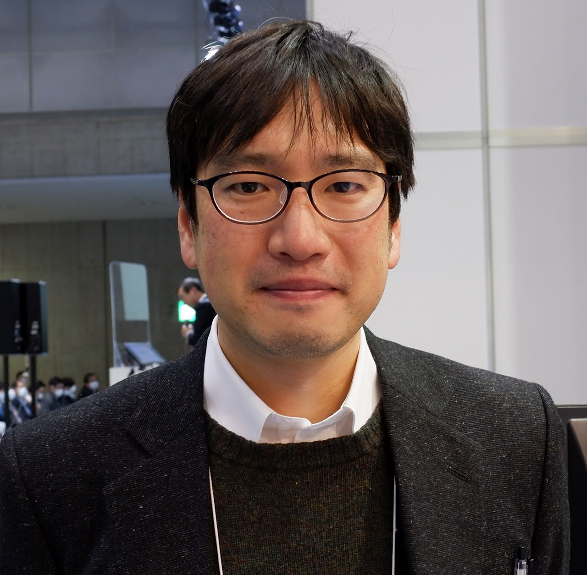
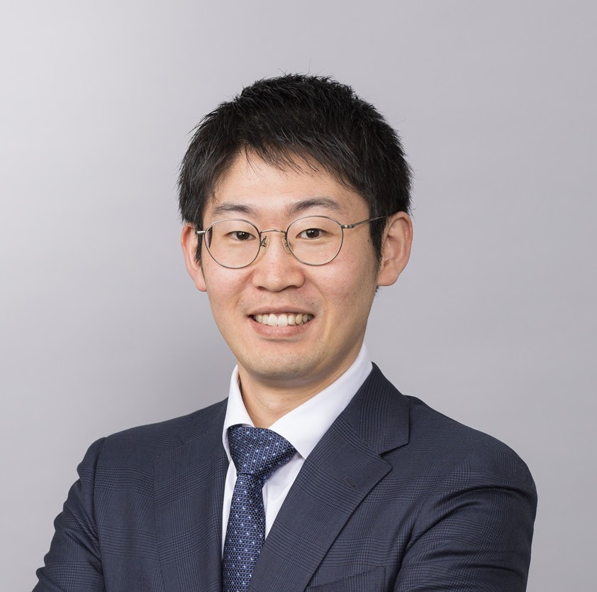

2026年5月25日（月）
第二回 研究へのAI活用勉強会を開催
学際科学フロンティア研究所 寄附研究部門「ナノ材料プロセスデータ科学」主催で、第二回 研究へのAI活用勉強会を開催いたします。
講師：坂口 慶祐（教授・大学院情報科学研究科）
講演テーマ：AIが変える研究プロセスと実践例
対象：東北大学 教職員・学生（学内限定・対面開催）
東北大学学際科学フロンティア研究所
材料プロセスデータ科学という新たな学際的学問分野の創成を目指し、
データサイエンスと材料プロセス工学を融合した革新的研究を展開しています。
本研究では、データサイエンスと材料プロセス工学を融合することで、 「材料プロセスデータ科学」という学際的学問分野の創成を目的としています。
具体的には、以下の研究を推進します：
これにより、次世代ナノ材料開発の加速と材料プロセス工学の革新を実現します。

教授
学際科学フロンティア研究所・多元物質科学研究所

准教授
多元物質科学研究所
客員准教授
学際科学フロンティア研究所
学際科学フロンティア研究所 寄附研究部門「ナノ材料プロセスデータ科学」主催で、第二回 研究へのAI活用勉強会を開催いたします。
講師：坂口 慶祐（教授・大学院情報科学研究科）
講演テーマ：AIが変える研究プロセスと実践例
対象：東北大学 教職員・学生（学内限定・対面開催）
学際科学フロンティア研究所 寄附研究部門「ナノ材料プロセスデータ科学」主催で、研究活動における生成AIの活用方法を学ぶ勉強会を開催いたします。
講師：坂口慶祐（准教授）、西羽美（准教授）、橋本佑介（特任准教授）
対象：東北大学 教職員・学生（学内限定・対面開催）
橋本特任准教授が東京科学大学の量子物理学・ナノサイエンスセミナーにて招待講演を行いました。
講演タイトル：AIとロボティクスが切り拓く新しい材料科学の入り口
本講演では、材料特性の実験データと計算データを機械学習によって統合した材料マップの開発、ロボットアーム・電動ピペット・3Dプリンタを用いた自動実験システムによるMOF合成の自動化、そして生成AIを活用したマルチエージェントシステムによる自律的なデータ分析手法について紹介しました。
橋本特任准教授がIMPRES2025（The 7th International Symposium on Innovative Materials and Processes in Energy Systems）のキーノートレクチャーに選択されました。
講演タイトル：Mapping Thermoelectric Materials Using Machine Learning on Integrated Computational and Experimental Datasets
本講演では、機械学習を用いて計算データと実験データを統合し、熱電材料の新しいマッピング手法を開発したことについて発表しました。
橋本特任准教授が応用物理学会にて研究発表を行いました。
発表タイトル：材料構造類似度マップの材料プロセス探索への応用 / Application of a Material Structural Similarity Map to Materials Process Exploration
本発表では、材料の構造類似度を可視化し、効率的な材料プロセスの探索を実現する新しい手法について紹介しました。
橋本特任准教授らの研究チームが、AIを用いた「材料マップ」の作成に関する論文を国際誌APL Machine Learningに発表しました。
本研究では、メッセージパッシング型グラフニューラルネットワークを用いて、実験データと理論計算データを統合した材料マップを開発。材料の構造類似性を視覚的に表現し、未知の高性能材料を迅速に抽出することが可能になりました。
橋本特任准教授がStanford UniversityのGLAM Special Seminarにて招待講演を行いました。
講演タイトル：Local and Global Mapping of Thermoelectric Materials Based on Computational and Experimental Datasets
本講演では、計算データと実験データに基づく熱電材料のローカルおよびグローバルマッピング手法について発表しました。機械学習を用いた材料マッピング技術により、熱電材料の構造-物性相関を可視化し、高性能材料の探索を効率化する新しいアプローチを紹介しました。
橋本特任准教授がTechShare社の招待により、ロボットアームを使った実験自動化に関する講演を行いました。
講演では、研究室で開発している実験自動化システムの実例や、低コストで実現可能な自動化手法について紹介しました。
橋本特任准教授がTechShare社の招待により、ロボットアームを使った実験自動化に関する講演を行いました。
講演では、研究室で開発している実験自動化システムの実例や、低コストで実現可能な自動化手法について紹介しました。
約20万円のロボットアームと電動ピペットを組み合わせた自動実験装置の開発を進めています。
初号機では、ハイスループット混合システムを構築し、実験の効率化と再現性向上を実現しました。低コストで導入可能な実験自動化ソリューションとして、今後の展開が期待されます。


学際科学フロンティア研究所内寄附研究部門設立記念シンポジウムを開催しました。
シンポジウムでは、本研究部門の設立趣旨や今後の研究方針について発表を行い、材料プロセスデータ科学という新しい学際的分野の創成に向けた議論を交わしました。また、産学連携の重要性を確認し、今後の共同研究の方向性について活発な意見交換が行われました。
ロボットアームを用いて東北大学ロゴの自動描画に成功しました。
この実験により、ロボットアームの精密制御技術が向上し、複雑な実験操作の自動化への応用可能性が実証されました。今後の実験自動化システムの高度化に向けた重要な成果となります。
橋本特任准教授らの研究チームが、メッセージパッシング型グラフニューラルネットワークを用いて、実験データと理論計算データを統合した材料マップを開発しました。この技術により、未知の高性能材料を迅速に抽出することが可能になり、新材料開発期間の短縮が期待されます。
青葉山駅（北出口）より徒歩4分
仙台駅より約15分（約2,000円）